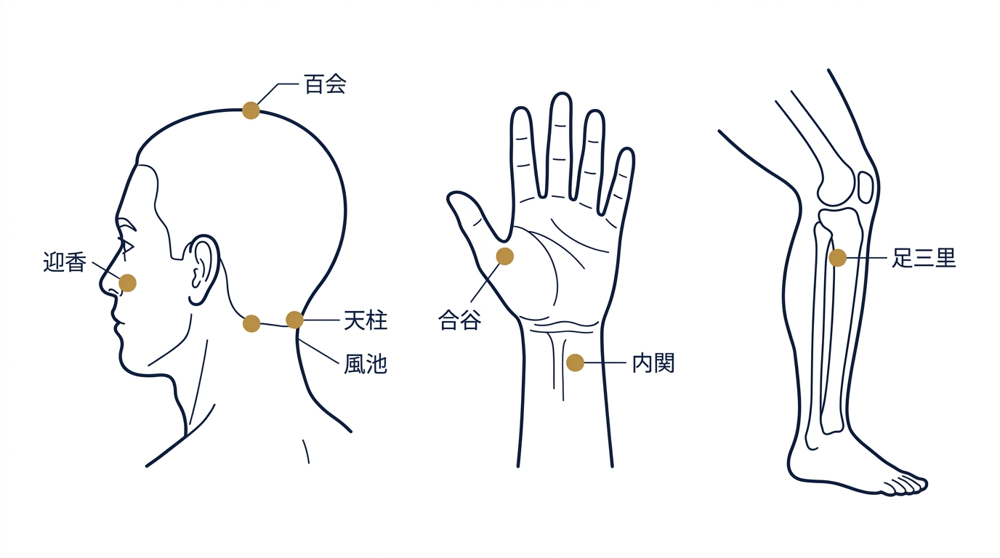

新型コロナウイルスの後遺症の鍼灸
感染後に長引く倦怠感・ブレインフォグ・嗅覚障害・自律神経症状に対し、全身の自己回復力を引き出す施術解説。
2つの病態側面と「無理をさせない」回復設計
銀座そうぜん鍼灸院の臨床解説では、コロナ後遺症を「ウイルス残存・中枢神経影響型（ブレインフォグ・嗅覚障害・慢性疲労）」と「過剰免疫反応型（微熱・皮膚トラブル・脱毛・動悸など）」の2側面から捉えています。
回復途上で強すぎる刺激や無理な運動を行うとクラッシュ（PEM）を招きやすいため、「1〜2日で治まらない悪化は好転反応ではなく悪化」と明確に判断し、深いノンレム睡眠とエネルギー代謝（ATP）の回復に合わせた穏やかなペース配分を重視します。
コロナ後遺症のケアに用いられる代表的な7つのツボ

| ツボ名（経穴） | 位置の目安 | 主な狙い・役割 | セルフケアの注意点 |
|---|---|---|---|
| 風池（ふうち） | 後頭部の髪の生え際、乳様突起と僧帽筋の間のくぼみ | 頭痛・めまい・不眠・首肩こり、後頭部循環の調整 | 強く押しすぎるとめまい悪化のため弱〜中刺激で |
| 天柱（てんちゅう） | 後頭部の生え際、首中央の太い筋（僧帽筋）のすぐ外側 | 鼻症状・嗅覚障害・自律神経の緊張緩和 | 3秒押して離す程度。倦怠感が強い日は回数控えめに |
| 合谷（ごうこく） | 手の甲、親指と人差し指の骨が交わる手前 | 頭痛・咳・鼻症状の緩和、入眠サポート | 妊娠中は強い刺激を避ける |
| 迎香（げいこう） | 小鼻（鼻翼）の最も膨らんだ部分のすぐ外側 | 鼻粘膜血流の改善、嗅覚障害・鼻閉・後鼻漏ケア | 皮膚が薄く内出血しやすいため、こすらず優しく3〜5秒 |
| 百会（ひゃくえ） | 両耳の先端を結ぶ線と正中線が交わる頭頂部 | ブレインフォグ（頭重感・集中力低下）・睡眠の質改善 | 中指の腹で深呼吸しながら心地よい圧で |
| 内関（ないかん） | 手首内側の横ジワから指3本分肘側、2本の腱の間 | 動悸・息切れ感・不安・吐き気・不眠の鎮静 | 指先に電撃痛が走る強圧は避ける |
| 足三里（あしさんり） | 膝の外側下のくぼみから指4本分下、すねの骨の外側 | 強い全身倦怠感・胃腸虚弱・免疫と体力の底上げ | クラッシュ直後は強揉みせず穏やかな温灸にとどめる |
査読論文が示す「Long COVID・嗅覚障害・倦怠感×鍼灸」の科学的エビデンス
| 年・研究デザイン | 対象・規模 | 主な結果と臨床的意義 | 限界・出典 |
|---|---|---|---|
| 2023年 RCT | Post-COVID入院リハ患者 160名（鍼併用80 vs 単独80） | 鍼併用群はBarthel・Borg・呼吸困難（MDS）・6分間歩行の全4指標で有意改善（単独群は2指標のみ）。 | 10〜14日間の短期評価。J Pharmacopuncture (PMID: 37799621) |
| 2024年 盲検RCT | COVID関連難治性嗅覚障害 40名 | 周波数制御耳鍼群は嗅覚VASが2.80→5.22へ有意改善（p=0.007、群間ANCOVA p=0.000）、対照群は有意差なし。 | 小規模・2回介入・耳鍼プロトコル。J Acupunct Meridian Stud (PMID: 38686430) |
| 2025年 コホート研究 | 独墺Post-COVID患者 79名（鍼85%） | 平均7回受診後に全般改善率62%±29%、倦怠感・身体機能・労作時呼吸困難がいずれもP<.001で有意軽減。 | 後ろ向き観察研究・漢方等併用あり。Medicine (PMID: 40327434) |
| 2024年 系統的レビュー | ウイルス後嗅覚障害 9研究（計687名） | 6 RCT中5試験でTCM（鍼・経穴注射）が対照群より良好。軽〜中等度の有害事象を2試験で報告。 | 研究全体の質が低く非COVID例も含む。Integr Med Res (PMID: 38831890) |
| 2024年 メタ解析 | 倦怠感・抑うつ・認知・頭痛・不眠 110 RCTs | Fatigue（P<0.01）・HAMD（P<0.01）・MMSE（P<0.01）・PSQI（P<0.01）で対薬物・対偽鍼とも有意改善。 | 同一症状群の一般RCT統合（直接検証は今後）。Front Neurol (PMID: 39099786) |
| 2025年 米国パイロットRCT | Mayo Clinic 嗅覚障害 30名（標準治療＋鍼10回） | 鍼関連の合併症ゼロと高い安全性を確認。一方、通院負担による脱落対策が課題。 | 小規模パイロット・安全性検証。PubMed PMID: 40375879 |
| 2022年 国内症例報告 | COVID-19後遺症（倦怠感・嗅覚異常） | 国内学会誌（伝統医療看護連携研究）にて倦怠感・嗅覚異常に対する鍼灸適用経過を報告。 | 単一症例報告（対照群なし）。J-STAGE |
医療機関の受診を最優先すべきレッドフラッグ
⚠ 救急・循環器・呼吸器・脳神経内科を最優先すべきサイン
安静時の強い息切れ・酸素飽和度（SpO2）の低下（目安93%以下）、胸痛・失神・激しい不整脈（心筋炎・肺血栓塞栓症の除外）、片側ふくらはぎの急な腫れ・熱感（深部静脈血栓症）、意識障害・けいれん・高熱と激痛、食事・水分が摂れない著しい消耗や強い抑うつがある場合は、直ちに専門医療機関を受診してください。
参考文献・出典
- 銀座そうぜん鍼灸院「新型コロナウイルスの後遺症の鍼灸」
- Omarova et al., J Pharmacopuncture (2023) — PubMed PMID: 37799621
- Mohebbi et al., J Acupunct Meridian Stud (2024) — PubMed PMID: 38686430
- Kraft et al., Medicine (Baltimore) (2025) — PubMed PMID: 40327434
- Zou et al., Integr Med Res (2024) — PubMed PMID: 38831890
- Lam et al., Front Neurol (2024) — PubMed PMID: 39099786
- Armstrong et al., Mayo Clinic Pilot RCT (2025) — PubMed PMID: 40375879
- 三保翔平『伝統医療看護連携研究』3(2):59–63 (2022) — J-STAGE
よくある質問（FAQ）
Q. 病院の診療科ごとに言われることが違い困っています。
確定した標準治療がまだ確立されていないため、当院では特定の部位に限定せず全身の回復力を底上げする方針で対応しています。
Q. 激しい運動やセルフケアをした方が良いですか？
感染症由来の後遺症では一般的な自律神経ケアが逆効果になることがあるため、体調を見極めながらご自身の感覚に合うものだけを取り入れます。
Q. サプリや漢方はたくさん飲んだ方が良いですか？
肝臓への負担になることもあるため、明らかに体感が良いものだけを選んで続けることをおすすめしています。
あわせて読まれる関連疾患（特に対応することが多い症状）
頭の中で「キーン」「ザー」と音が鳴り続ける状態を、脳の過覚醒（自律神経）と首肩の深層筋から整える施術解説。
吸入薬で止まらない長引く空咳に対し、自律神経・気管支神経の興奮と逆流性食道炎の視点から整える施術解説。
交感神経と副交感神経のバランス崩れによる不眠・倦怠感・めまい・胃腸不調を、体と神経の両面から整える解説。
脳の過剰興奮による聴覚過敏・頭鳴り・めまい・片頭痛に対し、筋肉・神経・内臓の乱れから脳を鎮める鍼灸解説。
肘の内側での尺骨神経圧迫による小指・薬指のしびれに対し、前腕の深層筋を緩め神経再生を促す施術解説。
30歳以上の女性の約4人に1人にみられる子宮筋腫に対し、骨盤内の血流と自律神経バランスを整える施術解説。